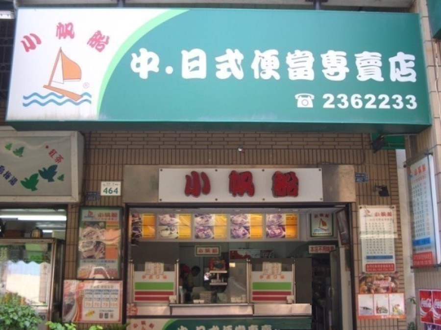
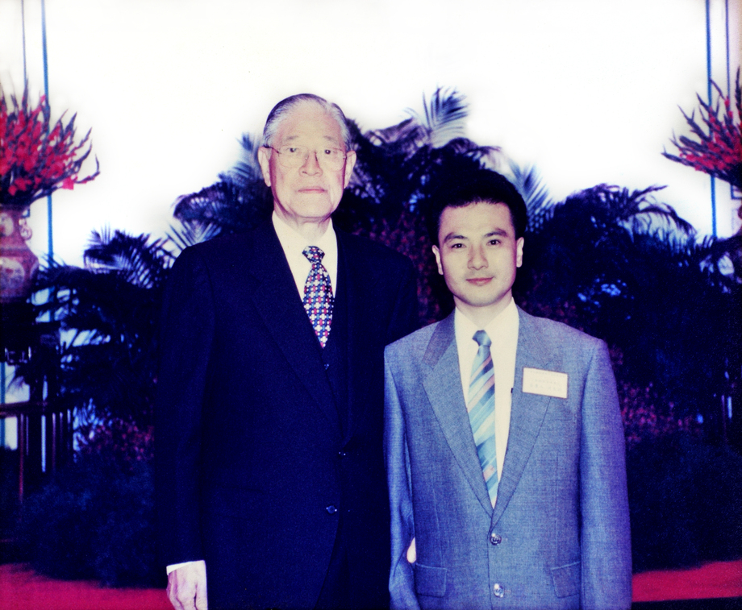

合適的菜色搭配
依場合、預算與人數安排主菜與配菜，實際內容清楚確認。


一路走來
面對工商、會議與團體用餐需求，小帆船以外帶、外送服務為核心，持續改善製作流程與團體訂購安排。
從菜色搭配、現場製作，到素食、水果與單位付款需求，我們希望讓每位承辦人更安心，也讓每位用餐者被好好照顧。
店內採開放式廚房、不鏽鋼設備現炒現包，並使用符合衛生標準的環保餐盒；配送則安排專責人員與保溫車輛，盡量維持餐點送達時的溫度與狀態。
舊站留下「優良品質、營養衛生、服務迅速」的經營理念，新版將它整理成今天仍可落實的服務原則。
依場合、預算與人數安排主菜與配菜，實際內容清楚確認。
以清楚的作業安排準備團體餐點，餐點完成後建議儘速食用。
協助確認送達時間、地點、葷素比例與機關學校付款流程。
昔日的努力造就今日的信譽，多年參與地方大型活動、展會與機關團膳供應，以下為舊站留存的紀錄，實際承辦內容仍以當時公告為準。
歡迎告訴我們場合、人數與預算。
立即來電洽詢